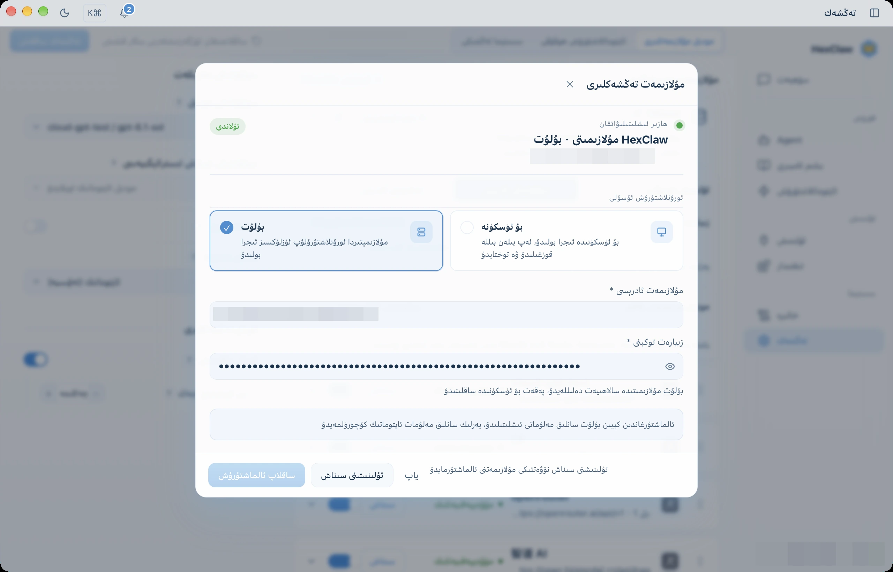
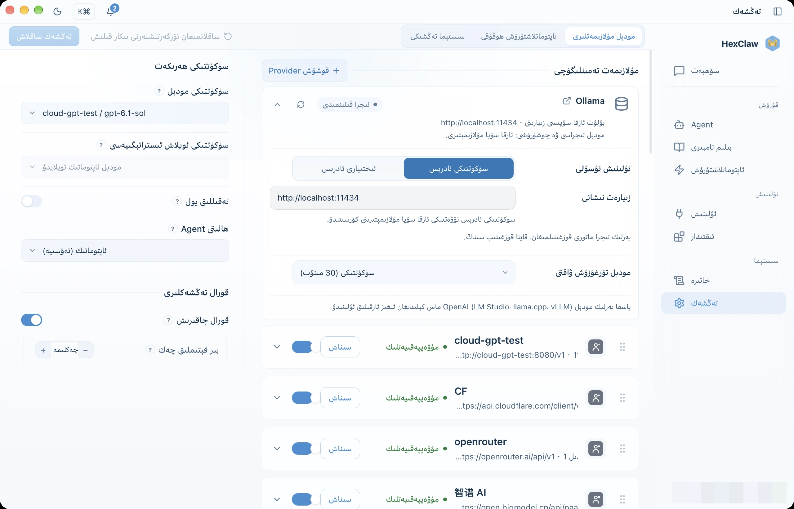

تېز باشلاش
ئەپنى ئورنىتىپ، مۇلازىمەت ۋە مودېلغا ئۇلاڭ، تۇنجى ئۇچۇرنى ئەۋەتىڭ.
سىستېما تەلىپى
| سۇپىلار | ئەڭ تۆۋەن تەلەپ |
|---|---|
| macOS | Apple Silicon / Intel؛ بىللە تەمىنلەنگەن Ollama ۋە Pandoc قاتارلىق زاپچاسلار macOS 14 ياكى ئۇنىڭدىن يۇقىرى نەشرىنى تەلەپ قىلىدۇ |
| Windows | Windows 10 1809+، x64 |
| Linux | x64؛ ئېلان بولىقى Ubuntu 22.04 دە قۇرۇلىدۇ، ئىجرا مۇھىتى WebKitGTK 4.1 ۋە باشقا Tauri تايىنىشلىرىغا ئېھتىياجلىق |
ئۈستەلئۈستى قېپىدىكى macOS 11 تۆۋەن چېكى بىللە كەلگەن بارلىق زاپچاسلارنىڭ ماسلىشىش دائىرىسىنى بىلدۈرمەيدۇ. تاللىغان Release نىڭ بولاقلىرى ۋە چۈشەندۈرۈشىنى كۆرۈڭ.
ئورنىتىش
macOS بىر قۇرلۇق سكرىپت
curl -fsSL https://raw.githubusercontent.com/hexagon-codes/hexclaw-desktop/bb3c12ec91eec91798b67c292bc8c85c4481dc2b/install.sh | bashHomebrew
brew tap hexagon-codes/tap && brew install --cask hexclawئورنىتىش بولىقى
GitHub Releases دىن v0.5.0 نىڭ macOS، Windows ۋە Linux بولاقلىرىنى چۈشۈرۈڭ.
- macOS:
.dmg - Windows:
.exe（NSIS） - Linux:
.deb،.AppImageياكى.rpm
تۇنجى قوزغىتىش
دەسلەپكى سەپلەش يېتەكچىسى ئىككى قەدەمدىن تەركىب تاپىدۇ: ئاۋۋال مۇلازىمەتكە ئۇلىنىپ، ئاندىن ئىشلىتىشكە بولىدىغان مودېل بار-يوقلۇقىنى تەكشۈرىدۇ.
- مۇلازىمەت تاللاش — ئەپ باشقۇرىدىغان يەرلىك مۇلازىمەتنى ئىشلىتىڭ ياكى ئۆزىڭىز ئورۇنلاشتۇرغان بۇلۇت HexClaw ئادرېسى ۋە زىيارەت token ىنى كىرگۈزۈڭ.
- تەكشۈرۈپ باشلاش — مۇلازىمەت ئۇلىنىشى ۋە كۆڭۈلدىكى مودېلنى تەكشۈرۈڭ. مودېل تەييار بولسا ئەسلى ۋەزىپىنى داۋاملاشتۇرۇڭ؛ بولمىسا مودېل تەڭشىكىگە كىرىڭ.
مودېل سەپلەنگەندىن كېيىن ئەسلى ۋەزىپىگە قايتىسىز، كىرگۈزگەن مەزمۇن ساقلىنىدۇ. كېيىن تەڭشەك → مودېل مۇلازىمەتلىرى دىن نۆۋەتتىكى مۇلازىمەتنى تەڭشەڭ؛ يەرلىك ۋە بۇلۇت مۇلازىمەتنى ئالماشتۇرۇش ئۈچۈن يان بالداقنىڭ ئاستىدىكى مۇلازىمەت ھالىتىنى چېكىڭ.
تۆۋەندىكىسى قاچىلانغان ئۈستەل يۈزى ئەپىنىڭ ئەمەلىي كۆرۈنۈشى: مۇلازىمەت ئالماشتۇرۇش ۋە مودېل تەڭشىكى. ئادرېس ۋە شەخسىي ئۇچۇرلار يوشۇرۇلغان.


مودېل سەپلىمىسى
ئاۋۋال تاللىغان مۇلازىمەتكە ئۇلىنىپ، تەڭشەك → مودېل مۇلازىمەتلىرى دىن ئاز دېگەندە بىر مودېل سەپلەڭ ۋە كۆڭۈلدىكى مودېل قىلىپ تاللاڭ. بۇلۇت مۇلازىمەتتە كۆڭۈلدىكى مودېل ئاللىبۇرۇن تەييار بولسا بىۋاسىتە باشلىيالايسىز. OpenAI، Claude، DeepSeek، Gemini، Qwen، Doubao، Ollama ياكى OpenAI API بىلەن ماس كېلىدىغان خاس تەمىنلىگۈچىنى قوشۇشقا بولىدۇ.
تۇنجى ئۇچۇرنى ئەۋەتىش
سۆھبەت بېتىدىكى كىرگۈزۈش رامكىسىغا «ماڭا قايسى ۋەزىپىلەردە ياردەم قىلالايدىغانلىقىڭىزنى ئۈچ جۈملە بىلەن تونۇشتۇرۇڭ» دەپ يېزىپ Enter نى بېسىڭ. مودېل ۋە تەپەككۇر تاللانمىلىرى رامكىنىڭ ئىچىدىكى ئاستىنقى قورال بالداقتا بولۇپ، نۆۋەتتىكى مودېلنىڭ ئىقتىدارىغا ئاساسەن كۆرۈنىدۇ. ئېقىملىق مەزمۇننىڭ تولۇق جاۋابقا ئايلىنىشىنى تەكشۈرۈڭ؛ ئۇلىنىش سىنىقىنىڭ مۇۋەپپەقىيەتلىك بولۇشىلا ۋەزىپىنىڭ تاماملانغانلىقىنى بىلدۈرمەيدۇ.
ئەپ قۇرۇلمىسى
- ئالدى ئۇچ: Vue 3 + TypeScript
- ئۈستەلئۈستى قېپى: Tauri v2 + Rust
- AI ماتورى: يەرلىك Go Sidecar ياكى ئۆزىڭىز ئورۇنلاشتۇرغان بۇلۇت HexClaw؛ مودېل چاقىرىش، Agent پىلانلاش، قورال ۋە بىلىم ئامبىرىنى باشقۇرىدۇ
- سانلىق-مەلۇمات: تاللانغان HexClaw مۇلازىمىتى سۆھبەت ۋە ئۇچۇرلارنى SQLite دا ساقلايدۇ؛ يەرلىك ۋە بۇلۇت سانلىق-مەلۇماتلىرى ئايرىم باشقۇرۇلىدۇ
يەرلىك مۇلازىمەتنى ئەپ قوزغىتىپ توختىتىدۇ. بۇلۇت مۇلازىمەتنى مۇلازىمېتىر باشقۇرىدۇ؛ مۇلازىمېتىر، مودېل ۋە باغلانغان IM ئۇلىنىشى ئىشلىسە، كومپيۇتېرىڭىز ئۆچۈرۈلگەندىمۇ بۇلۇت ۋەزىپىسى داۋاملىشالايدۇ.
كۆرۈنمە يۈز قۇرۇلمىسى
ئەپ قوزغالغاندا كۆڭۈلدىن سۆھبەت بېتىگە كىرىدۇ. يان بالداقتا سۆھبەت يۇقىرىغا قويۇلغان، قالغانلىرى ئۈچ گۇرۇپپىغا ئايرىلغان: قۇرۇش（Agent، بىلىم ئامبىرى، ئاپتوماتلاشتۇرۇش）، ئۇلىنىش（ئۇلىنىش، ئىقتىدار）، سىستېما（خاتىرە، تەڭشەك）. ⌘+K بۇيرۇق تاختىسى ياكى ⌘+سان بىلەن بەتكە سەكرىگىلى بولىدۇ.
سۆھبەت بىرلا كىرگۈزۈش رامكىسىدا نۆۋەتتىكى Agent مۇھىتى، مودېل ۋە تەپەككۇر تەڭشىكىنى ئىشلىتىدۇ؛ Chat / Agent / چوڭقۇر تەپەككۇر ئۈچ ھالىتىنى ئايرىم ئالماشتۇرۇش ھاجەتسىز. ئىقتىدار بېتىدە Skills، MCP ۋە Prompt ئامبىرى بار.
مەسىلە چىقسا
- تەڭشەك → مودېل مۇلازىمەتلىرى دىن نۆۋەتتىكى تەمىنلىگۈچىنىڭ ئۇلىنىشىنى سىناڭ.
- يەرلىك مۇلازىمەتتە خاتىرە بېتىدىن Engine قوزغالغانلىقىنى ۋە
16060پورتىنىڭ باشقا پروگرامما تەرىپىدىن ئىگىلەنمىگەنلىكىنى تەكشۈرۈڭ؛ بۇلۇت مۇلازىمەتتە ئادرېس، زىيارەت token ى ۋە مۇلازىمېتىر ھالىتىنى تەكشۈرۈڭ. - 401، 403، بوش بەت ياكى MCP ئۇلىنىش مەسىلىسى بولسا كۆپ كۆرۈلىدىغان سوئاللار بېتىنى كۆرۈڭ.